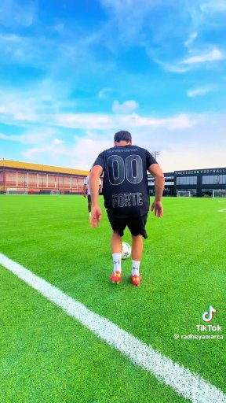

MY HOBBIES
FOOTBALL
Playing football also helps me relax and have confidence when I have stress and frustration. For a moment, after doing a task or studying all day, I feel tired and exhausted. However, having fun with the ball, like kicking it against the wall or trying to do some tricks, all my fatigue and exhaustion disappear.
DANCINGDancing provides physical/mental refreshment and relaxation. Laughter and fun—dancing can provide a lot of entertainment. Dancing is a form of exercise. Dancers find inspiration and motivation as they become lost in the dance.
That's because dancing, like many physical activities, releases hormones known as endorphins. These chemicals are directly responsible for making you feel happy, relaxed, and even euphoric. Dancing is also incredibly expressive, and can be a way for you to release pent-up emotions in a healthy manner.
GAMING
Playing video games a hobby that is worthwhile or a waste of time? Gaming can offer many more benefits than other hobbies and pastimes. It is a safe space to fail, build resilience, overcome challenges and explore alternative identities through characters and in-game worlds.
SECTION FOUR;
DUBAIDubai is one of the most modern and wealthiest cities in the world and as such, it has an incredible skyline filled with skyscrapers that touch the clouds, including the world's tallest building the Burj Khalifa which stretches over a quarter of a mile high .
MOMBASAMombasa is a beautiful tropical destination with several beautiful beaches popular for sun- bathing, swimming, walking or relaxing. Some of the fascinating beaches in Mombasa include Diani Beach, Bamburi beach and Nyali Beach..
KISUMUKisumu, which literally means a place of barter trade "sumo" and officially known as Kisumu City, is the Kenyan inland port city on Lake Victoria and the capital city of Kisumu County, Kenya..
SECTION FIVE:
I am enough.
I have enough strength to prosper and be successful in whatever I desire. I am grateful for my skills and abilities that help me achieve what I want.
Confidence comes naturally to me. My body, mind, and spirit are powerful and profound. Every day my confidence is growing. I am motivated and positive.
Am capable of achieving greatnes"I am capable of achieving anything I set my mind to." Our thoughts shape our reality. By affirming your capabilities, you reprogram your mind to focus on
SECTION SIX;